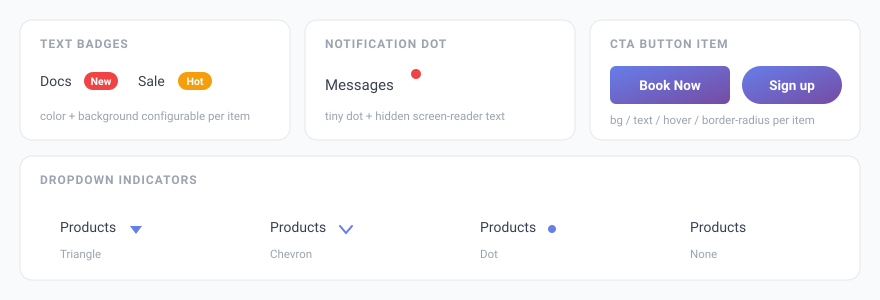

Badges & Notification Dots
Draw attention to individual menu items with a small text badge (e.g. “New”, “Hot”) or a simple notification dot.

Text badges
A badge is a small colored label that sits next to a menu item’s text — perfect for highlighting new sections or promotions.
- Go to Menu Builder → Menu Structure.
- Click a menu item to expand its options.
- Type the badge text in the Badge field (e.g. New, Hot, Sale).
- Optionally pick a badge background color.
- Click Save Menu.
Badges are decorative and marked aria-hidden so they don’t clutter the experience for screen-reader users. Keep the label short — one or two words works best.
Notification dot
A notification dot is a small colored circle attached to a menu item — useful for signalling unread activity or a new feature without any text.
- In Menu Builder → Menu Structure, expand a menu item.
- Enable the 🔴 Dot checkbox.
- Click Save Menu.
The dot includes hidden screen-reader text so assistive technology still announces that the item has a notification.
Item icons
Each menu item can also display a Font Awesome 6 icon before its label. When adding or editing an item, enter the icon class in the icon field — for example fas fa-home or fas fa-cart-shopping.